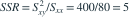

假定回归误差相互独立、服从均值为零且方差相同的正态分布，设计点固定。含截距的一元线性回归有 12 对观测，中心化平方和为 、、。检验回归斜率为零的 F 统计量及自由度是哪项？
- A，
- B，
- C，
- D
 ，
，
我已思考，展开答案与解析
正确答案：C
- 回归平方和为

。 - 残差平方和为 ，因估计了截距与斜率，残差自由度为 。
- 因此 ，原假设下自由度为 (1,10)。
易错提醒残差自由度不是 n−1，因为回归拟合估计了两个参数。
南审 813 · 2025 · 三·3(2)，PDF第2页
从大题拆分考点并重新编写选项；数值或设问有调整。
查看参考来源